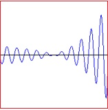
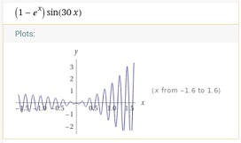

Colocviul " Tehnologii web " respectiv Examenul " Dezvoltarea aplicatiilor Web" se vor sustine oral conform planificarii.
Studentii vor realiza 3 aplicatii web si un proiect final conform tematicii de mai jos.
Atentie! aplicatiile si proiectul final trebuie sa fie originale. Studentii care prezinta aplicatii asemanatoare vor fi descalificati.
Pe baza aplicatiilor si a proiectului, se vor realiza 4 fisiere de tip pdf (3 lucrari+ proiectul final).
in care se vor descrie aplicatiile, respectiv proiectul final astfel:
- -Se descrie aplicatia web realizata( continutul paginilor web ce compun aplicatia , mod de functionare, tehnologii utilizate etc); Vezi exemplul de lucrare dat;
- -Se va insera in descriere sursa paginilor web;
- -Se vor insera in descriere imagini capturate din aplicatia web realizata(se poate folosi aplicatia "snipping" pentru a capta o regiune de ecran sau PrintScreen si "Paint");
- -Descrierea aplicatiei web se salveaza in format pdf
- -Se trimite fisierul in format pdf ce contine descrierea aplicatiei web.
Lucrarile pdf realizate se vor trimite respectand urmatorul program:
- -Lucrarea L1 pana la data de : 24.02.
In cadrul acestei lucrari veti prezenta un site realizat de d-voastra.
Site-ul trebuie:
- sa contina cel putin patru pagini .html diferite
- sa fie posibil sa treceti de la orice pagina de pe site-ul dvs. web la orice alta pagina urmand unul sau mai multe hyperlinkuri.
- sa includa cel putin o lista (ordonata sau neordonata), o tabela si cel putin o imagine.
- sa aiba cel putin un form cu diverse controale
- cel putin 5 figuri geometrice realizate in SVG
- sa aiba cel putin un fisier de CSS
- fisierul CSS sa contina minim 5 elemente CSS si 3 clase CSS
- paginile web sa fie web responsive
- fisierul index sa contina un meniu
- -Lucrarea L2 pana la data de : 08.03.
Cerinte:
- reluati site-ul realizata in cadrul Lucrarii L1 sau creati un nou site.
- folositi include pentru a realiza in php un meniu din care sa accesati urmatoarele pagini :
- o pagina cu o aplicatie php care inscrie valori aleatoare intr-un tablou bidimensional dupa care se extrag aceste valori si se afiseaza intr-un tabel
- o pagina cu o aplicatie php care afiseaza graficul unei functii matematice la alegere.
Exemple: (x2, exsin(x), lg(x), ...).
- Sugestie: Intrati pe site-ul http://www.wolframalpha.com si verifiati
daca ati afisat corect functia.
De exemplu pentru functia (1-ex)*sin(k*x) unde k=30 si x apartine intervalului [-1.5 +1.5]
putem compara imaginea obtinuta si imaginea obtinuta de pe site-ul http://www.wolframalpha.com.

- o pagina cu o aplicatie php in care sa foloiti cel putin o clasa scrisa de d-voastra
- o pagina php care contine un Form in care introduceti diverse date, apoi realizati o aplicatie php care prelucreaza datele primite din Form si afiseaza rezultatul prelucrarii.
- -Lucrarea L3 pana la data de : 21.03.
Cerinte:
- Realizati o aplicatie php care acceseaza o baza de date MySQL care contine minim 3 tabele: o tabela principala de tip copil si inca 2 tabele de tip parinte.
- Tabela principala trebuie sa contina cel putin 2 chei straine pentru a crea o relatie "one to many" cu cele doua tabele parinte.
- Aplicatia trebuie sa permita gestionarea celor 3 tabele(adaugare, stergere editare, cautare, listare).
- Stergerea unei inregistrari din tabelele parinte trebuie sa stearga inregistrarile corespunzatoare din tabela copil
- Optional: aplicatia sa permita operatiile de gestionare ale tabelelor numai utilizatorilor autentificati.
- -Proiect final pana la data examenului sau colocviului din modulul 3 -
Cerinte Info III:
- In cadrul acestui proiect veti prezenta o pagina web dinamica realizata de d-voastra.
- Tema proiectului este la alegere, cu conditia sa fie mai complicata decat temele din cadrul lucrarilor.
Cerinte AIA IV:
- In cadrul acestui proiect veti prezenta o pagina web dinamica cu continuturi specifice Ingineriei electrice sau
automatizarilor realizata de d-voastra.
Bonus 1 punct la nota finala pentru includerea in proiectul final a unui instrument virtual.
Instrumentul virtual trebuie:
- sa fie realizat utilizand programarea obiect (veti realiza o clasa instrument virtual)
- sa fie cat mai original (veti primi puncte in plus pentru originalitate).
- sa contina o metoda pentru afisarea valorii(valorilor) curente.
- exemplu un instrument virtual pentru masurarea directiei si intensitatii vantului:
Nota la examen sau colocviu:
- Lucrarile trimise L1-L3 vor fi notate cu puncte intre 0 - 33
- La examen se va prezenta proiectul final
- Proiectul final va fi notat cu note intre 1 - 10
- Nota finala: se va calcula dupa formula: ((nr_puncte obtinute din lucrari)/10+nota proiect)/2
Lucrarile de tip pdf se vor trimite astfel:
- - Se intra pe Activitate studenti
- - Daca nu aveti cont:
- - Se va face Inregistrare ( Alegeti Info III respectiv AIA IV si completati restul campurilor).
- - Atentie !! nu uitati adresa de mail si parola. Pe baza lor veti putea face Intrare pentru a trimite fisierele cu lucrari.
- - Asteptati pana va validez conturile.
- - Dupa minim 24 de ore va validez conturile si d-voastra puteti sa intrati in Activitate studenti.
- - Cand ati terminat lucrarea, cu optiunea Trimit fisiere trimiteti fisierul "pdf" realizat.
- - Atentie !!
- dimensiunile fisierelor trebuie sa fie sub 1 MO
- denumirea fisierului sa fie scurta, fara caractere speciale (spatiu ,;-+ etc)
- completarea campul "Tilul lucrarii" este obligatorie !
- - Verificati cu optiunea Vezi activitate daca s-au trimis fisierele.
- - Dupa maxim o sapatamana lucrarea trimisa va fi evaluata si punctata.
- - Cu optiunea Vezi activitate puteti afisa fisierele trimise, prezentele, observatiile referitoare la lucrarile trimise si punctele primite.